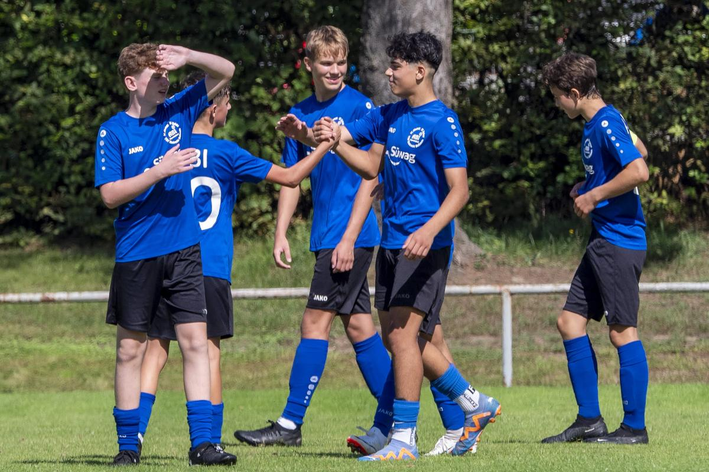

ABI C-Junioren: Sieg im Testspiel gegen Stetten/Kleingartach
 Zum Abschluss des Ferientrainings spielte ein Team mit jeweils sechs Jungs aus der C1 und C2 gegen die SGM Stetten/Kleingartach. In Ermangelung eines etatmäßigen Torwarts hüteten die drei Feldspieler Mika F, Alex und Niklas natürlich abwechselnd das Tor.
Bei wunderbaren Fußballwetter war das zusammengewürfelte Team von der ersten Minute an engagiert und setzte den Gegner permanent unter Druck. Schon zur Halbzeit konnte das ABI – Team fünf Tore erzielen. Viermal Lenni und einmal Alex sorgten für einen klaren Vorsprung. Obwohl die Jungs es in der zweiten Halbzeit spürbar ruhiger angehen ließen, erhöhten erneut Lenni, Jonah, Abdul und Noah B das Ergebnis. Den Gastgeber, die nie aufgaben, gelang noch der verdiente Ehrentreffer.
In der kommenden Woche beginnt die Vorbereitung auf die neue Runde. Die C1 spielt am kommenden Wochenende beim Vorbereitungsturnier in Steinbach. Zudem steht wie für die C2 am Samstag ein Freundschaftsspiel an.
Martin Kimmig
Alle weiteren Fotos befinden unter Google Photos.